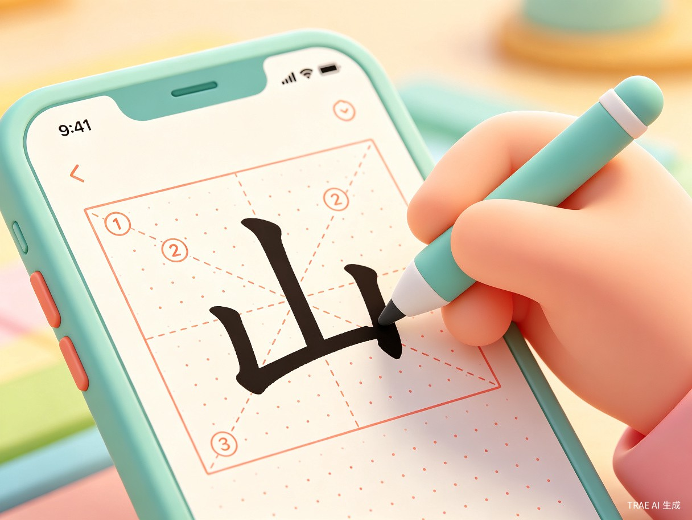
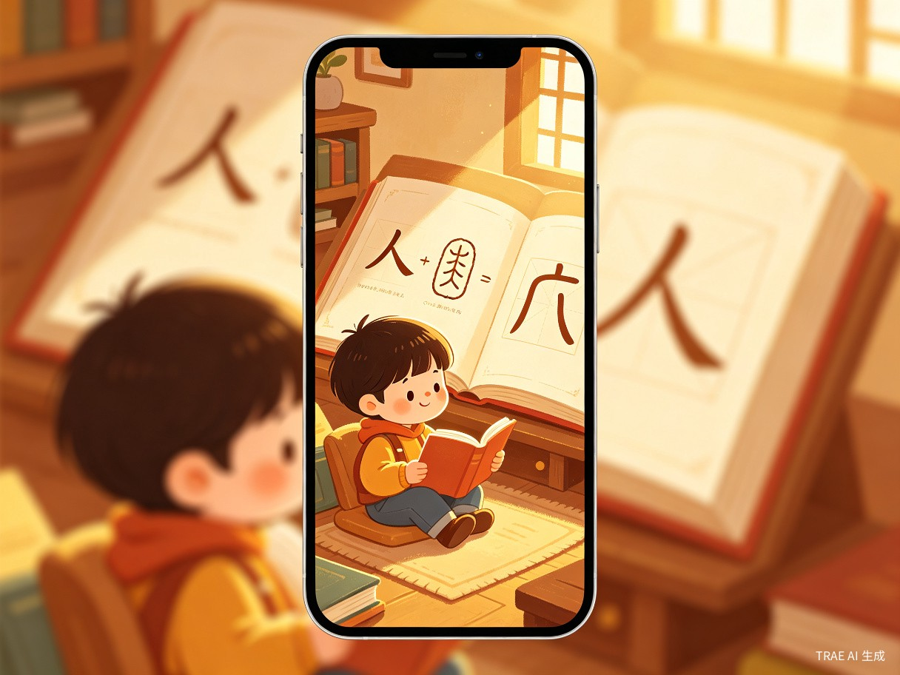
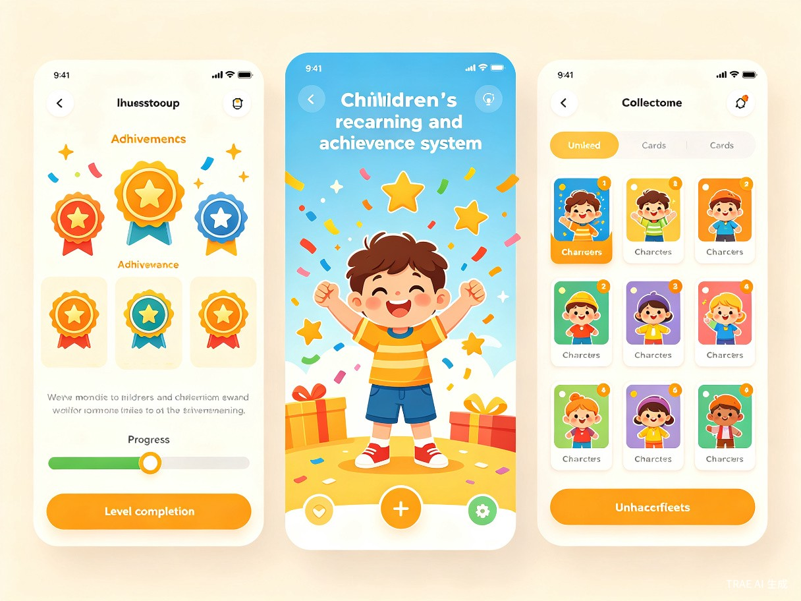

让每个汉字变成孩子的冒险旅程
「汉字小星球」是一款面向 3-6 岁幼儿 的趣味汉字启蒙微信小程序。我们通过 AI 驱动的个性化学习路径，将汉字学习融入互动游戏、动画故事和创意书写中，让孩子在玩耍中自然掌握汉字的形、音、义，解决传统识字教育中枯燥乏味、效率低下的问题。
想解决什么问题
幼儿阶段是汉字启蒙的黄金期，但现有产品要么过于枯燥（ flashcard 式反复记忆），要么缺乏系统性（内容零散无序），家长难以找到既有趣又有效的识字工具。
为什么会想到做这个
观察到身边许多家长在教孩子认字时焦虑且低效，孩子抗拒机械记忆。汉字本身蕴含丰富的象形故事和造字智慧，完全可以做成孩子喜爱的探索旅程。
产品形态
微信小程序 — 无需下载安装，家长打开即用，适合碎片化学习场景，降低使用门槛，方便在家庭和幼儿园场景中快速推广。
AI 技术驱动
利用 TRAE Work 的 Auto 模式快速搭建原型，结合 AI 自适应算法根据每个孩子的学习进度和兴趣动态调整内容难度与推荐策略。
为谁而做？在什么场景下使用？
核心用户是 3-6 岁学龄前儿童 及其家长。孩子在家庭日常、幼儿园课后或外出等待等碎片时间使用，每次 5-15 分钟，家长通过陪伴模式参与互动。
传统识字太枯燥
反复抄写、死记硬背让孩子产生抵触情绪，学习兴趣被扼杀在起跑线上。
家长缺乏科学方法
大多数家长不知道如何系统教孩子认字，只能零散地指认，缺乏循序渐进的学习路径。
现有 App 体验差
市面产品广告多、内容杂、交互设计成人化，不适合幼儿操作，且缺少个性化学习方案。
四大模块，打造沉浸式汉字体验
笔顺互动练习
将汉字书写变成有趣的描红游戏，孩子用手指在屏幕上跟练笔顺，实时获得反馈和鼓励。
- AI 笔顺识别，自动判断书写正确性
- 分阶难度：描红 → 临摹 → 独立书写
- 趣味动画引导，每写对一笔都有即时奖励

汉字星球冒险
每个汉字都是一个星球上的角色，孩子通过匹配、拼图、拖拽等游戏形式，在冒险中自然习得汉字。
- 象形配对：将汉字与对应图片连线
- 星球闯关：解锁新汉字星球，收集角色卡
- 多人竞赛：家长与孩子互动对战

造字故事动画
用精美动画讲述每个汉字从甲骨文到现代汉字的演变故事，让孩子理解汉字的造字逻辑和文化内涵。
- 从象形到楷书的演变动画
- 配合语音讲解，培养语感
- 文化小知识拓展，寓教于乐

成就与奖励体系
游戏化的成长系统，让孩子保持学习动力。每掌握一组汉字即可解锁新成就，收集汉字角色卡片。
- 每日学习打卡，连续学习有额外奖励
- 汉字图鉴收集，激发探索欲
- 家长端查看学习报告，了解孩子进度

为什么这个创意值得被实现？
社会价值：降低教育焦虑，促进教育公平
通过免费或低成本的微信小程序，让更多家庭（包括三四线城市和农村家庭）获得高质量的汉字启蒙资源。AI 个性化推荐让每个孩子都能获得"一对一"般的学习体验，缩小城乡教育差距，帮助家长从"不知道怎么教"的焦虑中解放出来。
效率提升：科学路径，事半功倍
基于认知科学和汉字教学研究，设计符合幼儿认知发展规律的学习路径。AI 算法根据孩子的学习数据动态调整内容难度和复习节奏，实现"最近发展区"内的最优学习效果。相比传统识字方法，预计可将识字效率提升 2-3 倍。
基于 TRAE Work 快速构建
本产品原型完全使用 TRAE Work Auto 模式 生成，展示了 AI 辅助开发的强大能力。从创意构思到原型落地，借助 TRAE 的智能代码生成和设计能力，大幅缩短开发周期。
从 MVP 到完整产品的演进
核心识字功能上线
实现 100 个基础汉字的学习模块，包含笔顺练习、象形配对游戏和汉字故事动画。完成微信小程序基础框架搭建和用户注册体系。
AI 个性化 + 社交功能
引入 AI 自适应学习算法，根据学习数据动态调整内容。增加家长端学习报告、好友排行和分享功能，扩展汉字库至 500 字。
内容生态 + 幼儿园合作
开放 UGC 内容创作平台，允许教育工作者贡献汉字故事和游戏。与幼儿园建立合作，提供课堂版和家园共育方案，汉字库扩展至 1000+ 字。